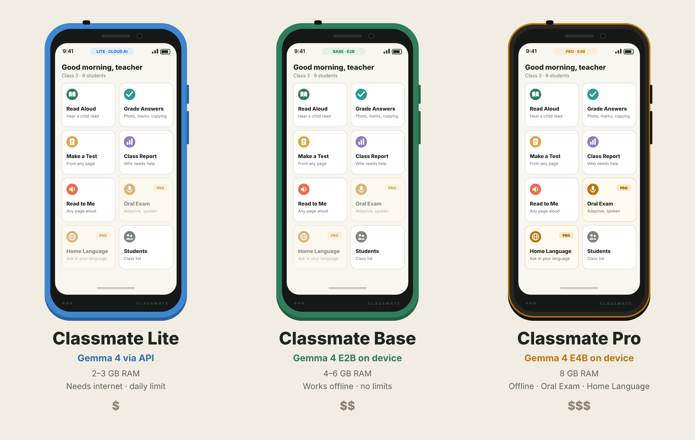
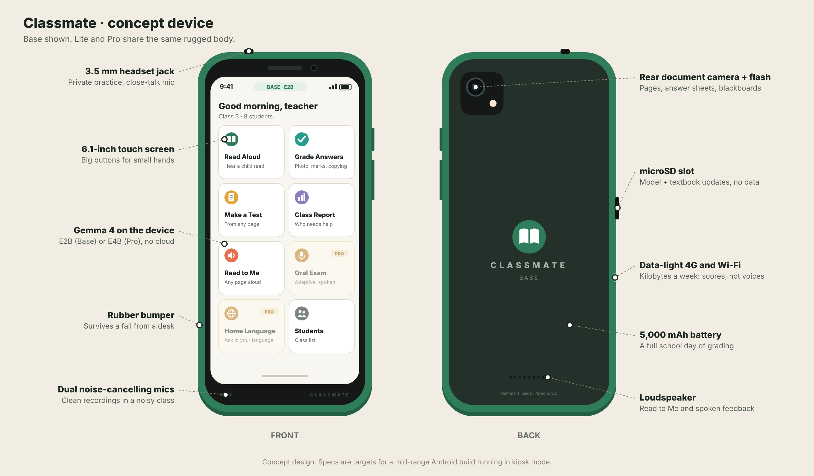

Classmate
A shared classroom device that hears children read, sees their written work and grades both, so one teacher can give every child individual attention. It runs Gemma 4 on the device and uses the network only for a few kilobytes a week.

The problem
An estimated 7 in 10 ten-year-olds in low- and middle-income countries cannot read and understand a simple text (World Bank, UNESCO, UNICEF and partners, 2022). The only reliable way to find out whether a child can read is to listen to them read, one at a time. With 40 to 60 children in a class, a teacher simply cannot, so struggling readers go unnoticed for years.
Cloud AI does not fix this where it matters most. Networks there are expensive, slow or missing; the work involves dozens of voice recordings a day, which are costly to upload; and it is children's data. GSMA estimates that 3.1 billion people live under mobile coverage but still do not use mobile internet, mostly because of cost and skills: nine times more than the 350 million with no coverage at all.
Who it is for
Three versions
| Lite | Base | Pro | |
|---|---|---|---|
| AI | Gemma 4 via the Gemini API | Gemma 4 E2B on the device | Gemma 4 E4B on the device |
| Hardware | Cheapest phone, 2–3 GB RAM | 4–6 GB RAM | 8 GB RAM, better mic |
| Network | Needed for AI; daily limit | Weekly sync and updates only | Weekly sync and updates only |
| Without signal | Saves work in a queue, grades it when the network returns | Everything works | Everything works |
| Strength | Lowest price | Works anywhere, private, no running cost | Most accurate with hesitant speech and messy handwriting, plus exclusive features |
| Weakness | Uploads photos and voice; stops grading offline | Weaker on very hesitant speech and messy writing | Most expensive |
Feature list
| Feature | What it does | Lite | Base | Pro |
|---|---|---|---|---|
| Read Aloud grader | Photo of a paragraph, teacher taps where to start, the child reads, every word is marked correct, misread, skipped or not reached, with words correct per minute. | ✓ | ✓ | ✓ best |
| Spoken comprehension check | Asks a question about the passage, the child answers out loud, the answer is judged. | ✓ | ✓ | ✓ |
| Grade Answers | Photos of handwritten answer sheets are read and marked against the model answer; for maths, the first wrong step is found. The teacher approves each mark. | ✓ | ✓ | ✓ best |
| Copying check | Compares all answers to the same question and flags pairs that share unusual mistakes, with an explanation for the teacher. | ✓ | ✓ | ✓ |
| Make a Test | Multiple-choice and short-answer questions from a photographed textbook page, ready to print. | ✓ | ✓ | ✓ |
| Class Report | Reading speed trends, who needs help, words the class struggles with, and what to reteach this week. | ✓ | ✓ | ✓ |
| Spoken parent reports | A three-sentence progress report in the family's language, read aloud for parents who cannot read. | ✓ | ✓ | ✓ |
| Read to Me | Any page read aloud with word highlighting, through headphones on the audio jack, plus "explain it simply". | ✓ | ✓ | ✓ |
| Oral Exam | An adaptive spoken exam: listens, judges, and chooses a follow-up, easier or harder question. | – | – | PRO |
| Home Language bridge | A child asks about the lesson in their home language and hears the answer in it. | – | – | PRO |
| Weekly sync | Sends scores only (about 1–2 KB). Photos and voices never leave the device on Base and Pro. | ✓ | ✓ | ✓ |
Why Pro is a different product, not just a faster one
The Oral Examiner is a chain with no room for error: understand hesitant children's speech, judge a half-right answer, then pick the right next question in real time. If the first step mishears the child, every later step goes wrong. Gemma 4 E2B's audio is its weakest area (its English speech error rate is about 8% on clean adult speech in Google's own results, and independent hands-on tests found E4B clearly better), so this feature only ships on E4B. Many children know more than they can write; an oral exam is the fairest test for them, but it costs a teacher ten minutes per child, so it almost never happens. The Home Language bridge also depends on speech translation, where E4B is markedly stronger.
How it works: Gemma where it is strong, plain code where it must be exact
Page photo → text
Child's voice → what they actually said, transcribed blind
Word-by-word alignment: correct, misread, skipped, not reached
Words correct per minute, class statistics, copying similarity
Kind feedback, questions, reports, explanations
The key design decision: when transcribing a child's reading, the device never gives Gemma the page text. If a language model knows what the child was supposed to say, it tends to "hear" the correct reading and hide the mistakes. Transcribing blind and comparing in code keeps the assessment honest.
Copy detection is also plain code: it compares 3-word phrases and, more importantly, unusual words two answers share that are not in the model answer. Two students sharing a correct fact is normal; two students sharing the same misspelling and the same wrong idea is not. Gemma only writes the neutral explanation for the teacher.
The device

Data budget
| Direction | What | Size | How often |
|---|---|---|---|
| Up | Per-student scores and problem words | ~200 bytes each | Weekly |
| Up | Class summary | ~1–2 KB | Weekly |
| Down | New reading passages and rubrics | A few MB | Once a term |
| Down | Model update | ~1.5–3 GB | Rarely, by microSD or town Wi-Fi, never mobile data |
A cloud app would upload every 25-second recording and every page photo. The simulator counts both numbers live: "Data sent" and "Kept on device".
The demo build
A web simulator of the device (touch UI inside a drawn device frame, camera, file picker and microphone recording), a zero-dependency Node server that holds every prompt, and a Python server that loads Gemma 4 from model.safetensors. The same web app runs full screen on a real phone.
Browser (device UI) ── Node server (prompts, tiers) ──┬── Python model server → models/base (E2B), models/pro (E4B)
camera, mic → WAV 16 kHz ├── llama-server (OpenAI-compatible, GGUF) [optional]
alignment + copy check in JS ├── Gemini API (Lite tier) [optional]
└── demo data (no model, backup)
How to demo it (3 minutes)
- 0:00 The problem: "7 in 10 ten-year-olds can't read a simple text. You only find out by listening. One teacher, 60 kids: it never happens."
- 0:25 Show the device on Base. Turn Network off in the side panel. Point at "AI on device" in the status bar.
- 0:35 Read Aloud: photograph a page, tap the word to start from, pick a student. A teammate reads it like a child, skipping one word and misreading another on purpose.
- 1:10 Results light up: green, amber, red, words per minute, kind feedback read aloud, comprehension question answered by voice.
- 1:35 Grade Answers: pick four answer-sheet photos, then "Check for copying": the pair with the same misspellings is flagged and explained.
- 2:00 Class Report: who needs help, words the class struggles with, "what should I reteach", a parent report played in Bangla. Sync: "1 KB sent."
- 2:20 Switch to Pro: Oral Exam asks, listens, adapts. Switch to Lite with the network still off: it queues the work and grades it when you turn the network back on.
- 2:45 Close: "One open, Apache-licensed model that reads, listens and reasons, small enough for a cheap phone. Data sent this week: kilobytes."
Honest limits
- Children's speech is harder than adult speech. The device is a helper for the teacher, not an automated judge, and every mark can be changed.
- Local-language quality varies. English is the starting language; others ship after testing.
- Text-to-speech uses the voices built into the operating system, which differ by language and device.
- Gemma 4 takes about 30 seconds of audio per clip, so recordings stop at 25 seconds and reading is done paragraph by paragraph.
- Copy detection only flags pairs for review; it is never proof.